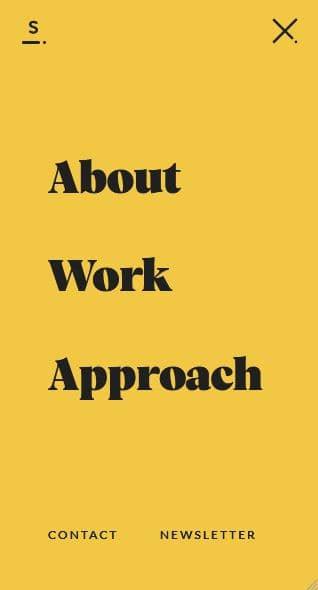

White Space and Clean Design
Velvet Hammer
velvethammer.netWhite space is the term for blank areas that are incorporated into a design. White space can be used to help users focus on important elements of the design, improve comprehension, create balance, distinguish between elements of the design, create a visual hierarchy, and help users adapt to the design. Velvelt Hammer is a music and management group that uses whitespace well in their website. Their use of white space and clean design draws attention to the company's logo in the middle of the page.
Hick's Law
Sennep
sennep.com Hick's Law says that the more choices a user is provided with, the longer it will take the user to make a decision. Sennep is a company that creates digital products. Their website uses a minimalist approach, providing only a few links so that users can quickly get to the resources they need.
Visual Hierarchy
Hale Center Theater
htc.orgVisual hierarchy relates to organizing visuals in order to communicate importance and focus using proportion, color, contrast, style, and other design elements. Hale Center Theater is a theater troupe that performs plays and musicals. On their homepage, they display an image of their location at the Mountain America Performing Arts Center. By centering the building in the middle of the image, they immediately draw attention to the building, causing the theater to become the focal point of the image.